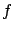
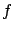

Siguiente: Propagación sobre una superficie
Subir: Principios básicos de propagación
Anterior: Principios básicos de propagación
Índice General
Propagación en espacio libre
En el espacio libre la energía electromagnética se propaga
uniformemente en todas las direcciones desde una fuente puntual.
Dada una antena transmisora con potencia de transmisión  ubicada en el espacio libre, alejada de cualquier tipo de
obstrucción, que tiene una ganancia en la dirección de la
antena receptora, la densidad de potencia (potencia por unidad de
área) a una distancia d en la dirección elegida estará dada
por:
ubicada en el espacio libre, alejada de cualquier tipo de
obstrucción, que tiene una ganancia en la dirección de la
antena receptora, la densidad de potencia (potencia por unidad de
área) a una distancia d en la dirección elegida estará dada
por:
La potencia disponible en la antena receptora, que tiene un área
efectiva A3.1 resulta entonces:
donde es la ganancia de la antena receptora.
De esta forma se obtiene que:
lo cual se conoce como la ecuación de espacio libre o de
Friis. La conocida relación entre la longitud de onda
 , la frecuencia f y la velocidad de propagación
c
se puede utilizar para escribir la
ecuación en una forma alternativa:
, la frecuencia f y la velocidad de propagación
c
se puede utilizar para escribir la
ecuación en una forma alternativa:
La pérdida en espacio libre es expresada convenientemente como una
cantidad positiva y de la ecuación anterior se obtiene que:
donde
Resulta muchas veces conveniente comparar la pérdida de camino con
la pérdida de camino básica entre antenas isotrópicas (
) la cual resulta:
donde la distancia  está expresada en km y la frecuencia  en
MHz.
Como se puede observar en la ecuación (3.2), la pérdida
en espacio libre es proporcional al cuadrado de la distancia
d, entonces la potencia recibida decae 6 dB cuando la
distancia se duplica (o disminuye 20 dB por década). De forma
similar, la pérdida aumenta con el cuadrado de la frecuencia de
transmisión, entonces las pérdidas también aumentan 6 dB si la
frecuencia se duplica. En una primera inspección, se podría concluir
que la utilización de altas frecuencias no sería adecuada para
comunicaciones móviles, sin embargo, este incremento en la pérdida
de transmisión se puede compensar con un incremento en las ganancias
de las antenas.
En la práctica, se dice que existen condiciones de propagación de
espacio libre si existe visibilidad entre la antena transmisora y la
antena receptora en la primer zona de Fresnel (ver sección
4.2) y si no existen reflexiones en la superficie de la
Tierra o en obstáculos como pueden ser colinas, árboles, edificios,
etc. De acuerdo a lo visto, todo modelo de propagación debe al menos
predecir en cualquier caso una pérdida mayor a la de espacio libre.
está expresada en km y la frecuencia  en
MHz.
Como se puede observar en la ecuación (3.2), la pérdida
en espacio libre es proporcional al cuadrado de la distancia
d, entonces la potencia recibida decae 6 dB cuando la
distancia se duplica (o disminuye 20 dB por década). De forma
similar, la pérdida aumenta con el cuadrado de la frecuencia de
transmisión, entonces las pérdidas también aumentan 6 dB si la
frecuencia se duplica. En una primera inspección, se podría concluir
que la utilización de altas frecuencias no sería adecuada para
comunicaciones móviles, sin embargo, este incremento en la pérdida
de transmisión se puede compensar con un incremento en las ganancias
de las antenas.
En la práctica, se dice que existen condiciones de propagación de
espacio libre si existe visibilidad entre la antena transmisora y la
antena receptora en la primer zona de Fresnel (ver sección
4.2) y si no existen reflexiones en la superficie de la
Tierra o en obstáculos como pueden ser colinas, árboles, edificios,
etc. De acuerdo a lo visto, todo modelo de propagación debe al menos
predecir en cualquier caso una pérdida mayor a la de espacio libre.
Siguiente: Propagación sobre una superficie
Subir: Principios básicos de propagación
Anterior: Principios básicos de propagación
Índice General
SAPO